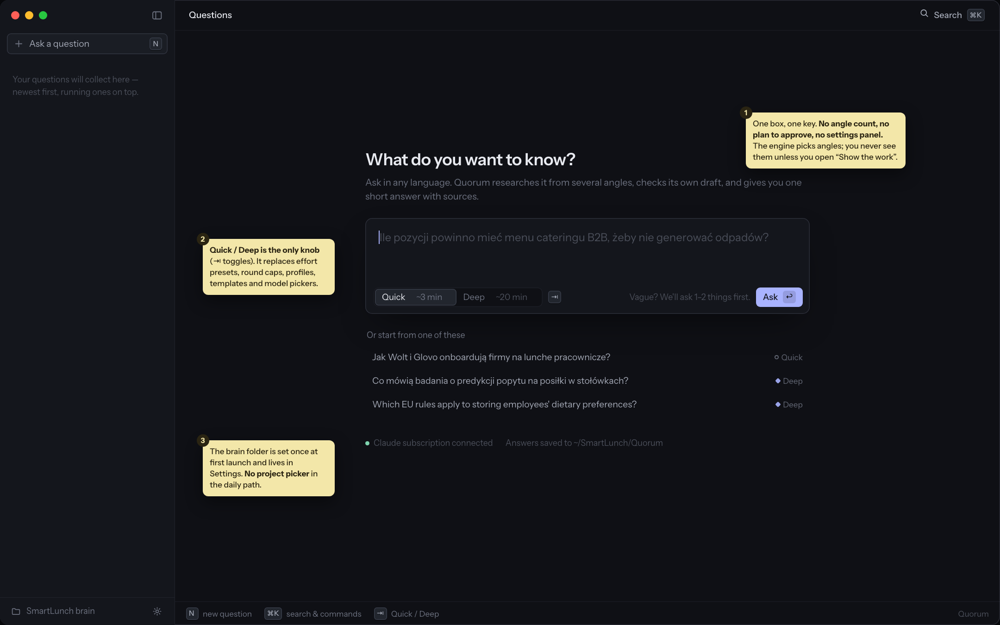
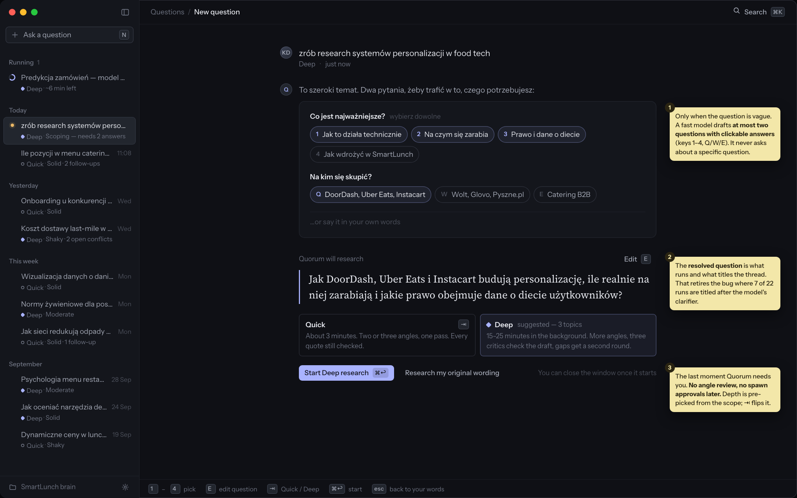
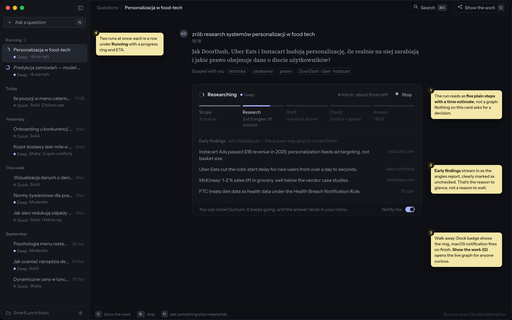
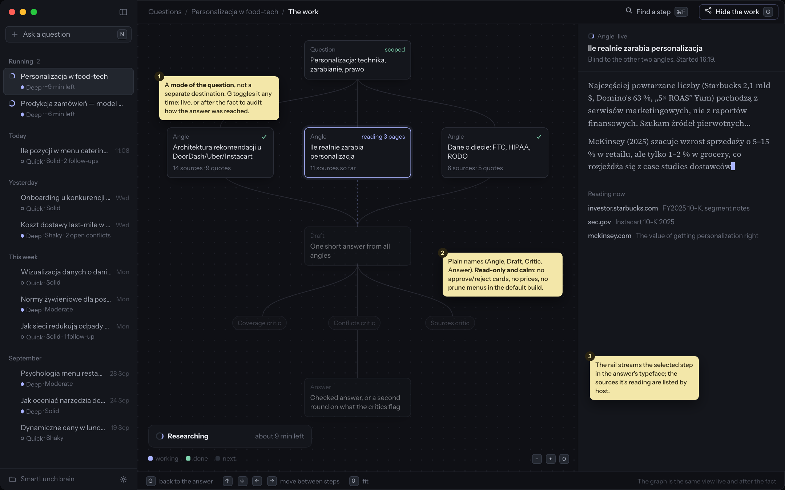
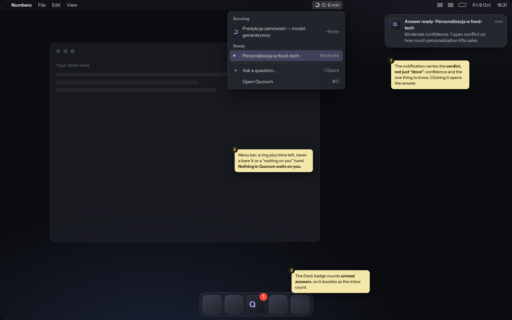
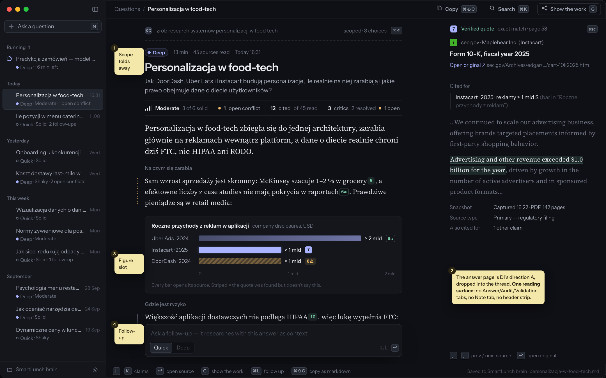
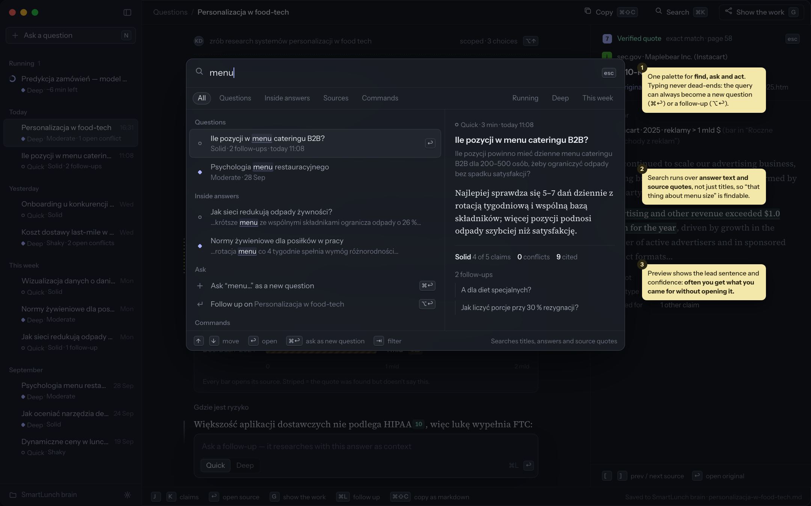
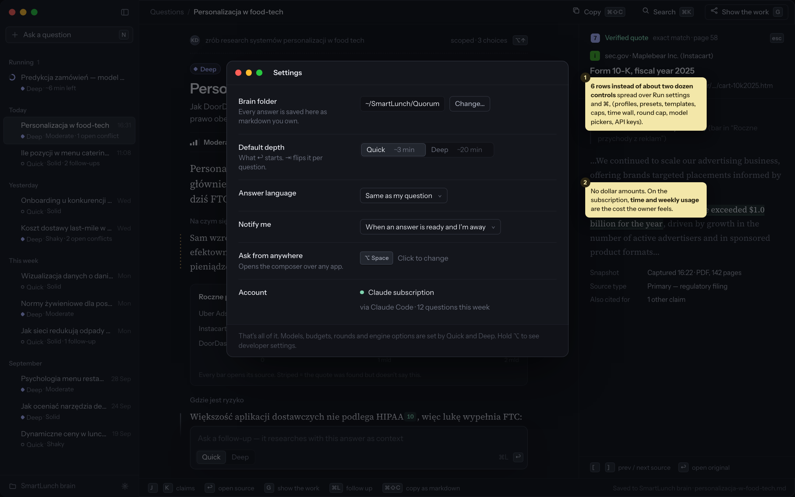
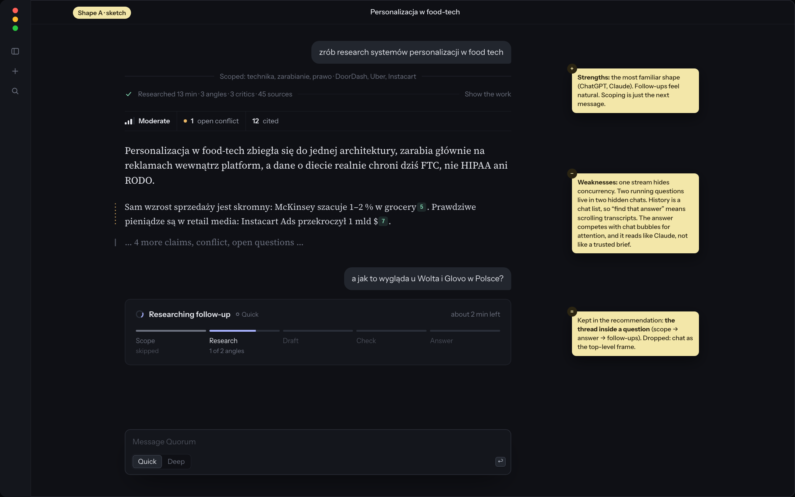

All three keep the same answer page and the same engine. They differ in the frame around them: how you start, where running work lives, and how you find last week's answer.
Question, scoping, progress card, answer and follow-ups in one scroll, ChatGPT-style. Past chats live in a hidden drawer.
Linear-style list of runs on the left, the selected answer on the right, the composer in ⌘K. Each run stands alone; a follow-up is a new row.
B's inbox, with A's thread inside each row: one question holds its scoping, its answer and its follow-ups. Composer from N, ⌘K or ⌥Space.
| What the owner does | A · Conversation | B · Inbox + detail | C · Inbox of threads |
|---|---|---|---|
| Starts a question in under 5 s | Yes, the composer is always there | Yes, via ⌘K | Yes, N / ⌘K / ⌥Space from any app |
| Answers a scoping question | Natural, it's the next message | Awkward, a modal step before the run exists | Natural, it's the first turn in the thread |
| Runs two questions at once, walks away | Hidden, each lives in its own chat | Clear, a Running group | Clear, a Running group with rings and ETAs |
| Finds last week's answer | Weak, a chat list of transcripts | Strong, grouped list + search | Strong, grouped list + search over answers and quotes |
| Asks a follow-up | Natural | Fragmented, a new unrelated row | Natural, it stays in the question's thread |
| Reads the answer as a brief, not a chat reply | Diluted by bubbles | Yes | Yes, the answer page is the thread's main block |
| Room for later: topics (brain), Wide tier, charts | Little, everything is a message | Good: list filters, answer types | Good: a topic is a group of questions, Wide is a third depth, charts are answer blocks |
Why C. The owner's metric is reaching for Quorum 3+ times a week instead of ChatGPT or Claude deep research. A wins the first ten seconds because it feels like what they already use, but it loses the hour after, when two runs are going and last Tuesday's answer has to be found. B wins the hour after but makes scoping and follow-ups feel bolted on. C costs nothing extra: the list is B's, and the detail is a short thread that is almost always just one answer.
What trust needs from the shell: the answer page has to be the center of gravity, not a tab or a rail. In C it is the only reading surface. Sources, the work graph and the markdown export are all one key away from it, never in front of it.








